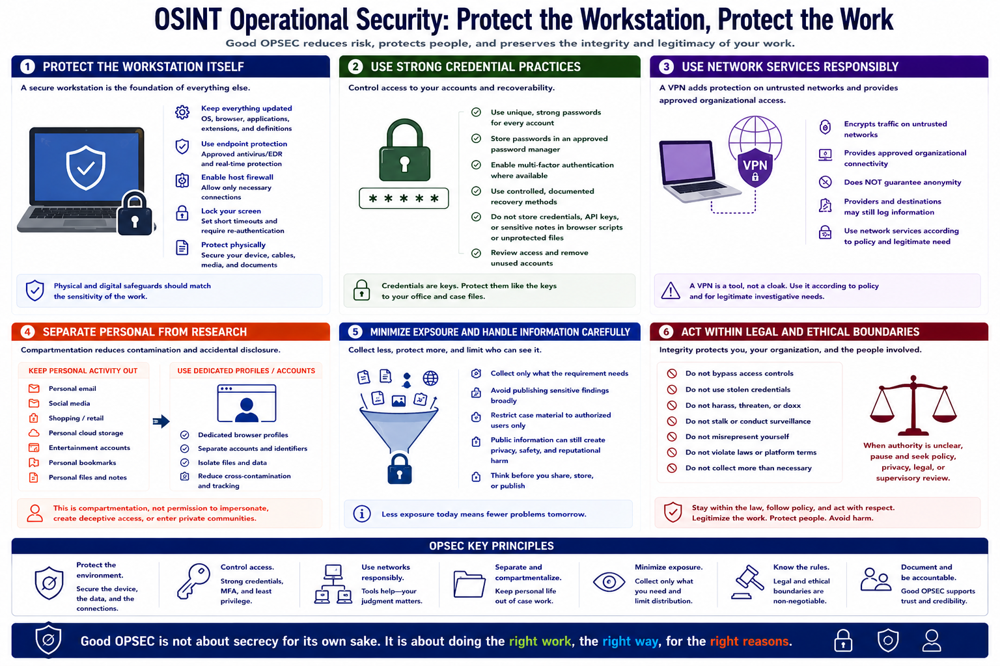

Privacy, Security, and OPSEC Basics
Connecting to LMS... Progress: in progress

Narration
Operational security begins with protecting the workstation itself. Apply operating-system, browser, application, and extension updates. Use supported endpoint protection, a host firewall, screen locking, and physical safeguards appropriate to the sensitivity of the work.
Use unique passwords stored in an approved password manager and enable multi-factor authentication where available. Recovery methods should be controlled and documented. Do not place case credentials, API keys, or sensitive notes in browser scripts or unprotected files.
A VPN can protect traffic on untrusted networks and provide an approved organizational connection, but it does not guarantee anonymity or make prohibited activity acceptable. Providers and destinations may still log information. Choose and use network services according to policy and the investigation's legitimate need.
Separate personal accounts and identifiers from research workflows to reduce contamination and accidental disclosure. This is basic compartmentation, not permission to impersonate people, create deceptive access, or enter private communities.
Minimize unnecessary exposure. Collect only what the requirement needs, avoid publishing sensitive findings broadly, and restrict case material to authorized users. Public information can still create privacy, safety, and reputational harm when aggregated or mishandled.
Legal and ethical boundaries govern the workstation. Do not bypass access controls, use stolen credentials, harass, doxx, stalk, or conduct unlawful surveillance. When authority is unclear, pause and seek policy, privacy, legal, or supervisory review.